讲座 3
Optimization
Optimization is choosing the best option from a set of possible options. We have already encountered problems where we tried to find the best possible option, such as in the minimax algorithm, and today we will learn 关于 工具 that we can use to solve an even broader range of problems.
Local 搜索
Local 搜索 is a 搜索 algorithm that maintains a single node and searches by moving to a neighboring node. This type of algorithm is different from 上一页 types of 搜索 that we saw. Whereas in maze solving, for 示例, we wanted to find the quickest way to the goal, local 搜索 is interested in finding the best 答案 to a 问题. Often, local 搜索 will bring to an 答案 that is not optimal but “good enough,” conserving computational power. Consider the following 示例 of a local 搜索 problem: we have four houses in set locations. We want to build two hospitals, such that we minimize the distance from each house to a hospital. This problem can be visualized as follows:
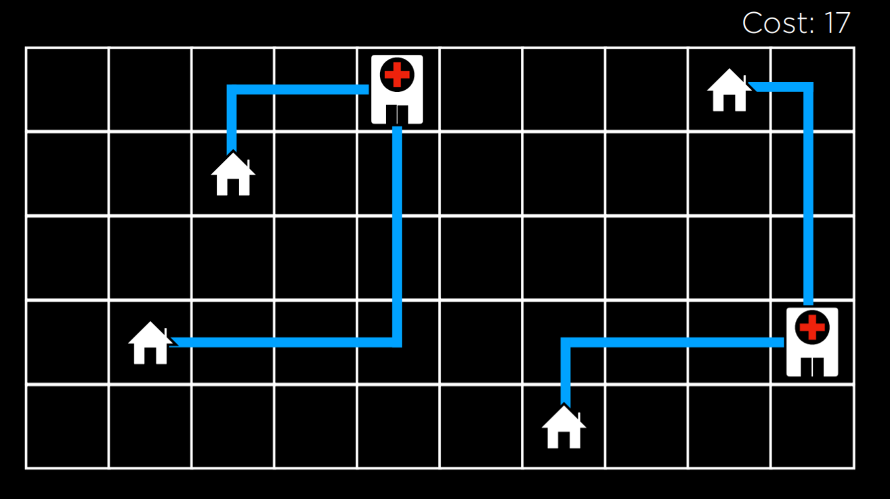
In this illustration, we are seeing a possible configuration of houses and hospitals. The distance between them is measured using Manhattan distance (number of moves up, down, and to the sides; discussed in 更多 detail in 讲座 0), and the sum of the distances from each house to the nearest hospital is 17. We call this the cost, because we try to minimize this distance. In this case, a state would be any one configuration of houses and hospitals.
Abstracting this concept, we can represent each configuration of houses and hospitals as the state-space landscape below. Each of the bars in the picture represents a value of a state, which in our 示例 would be the cost of a certain configuration of houses and hospitals.
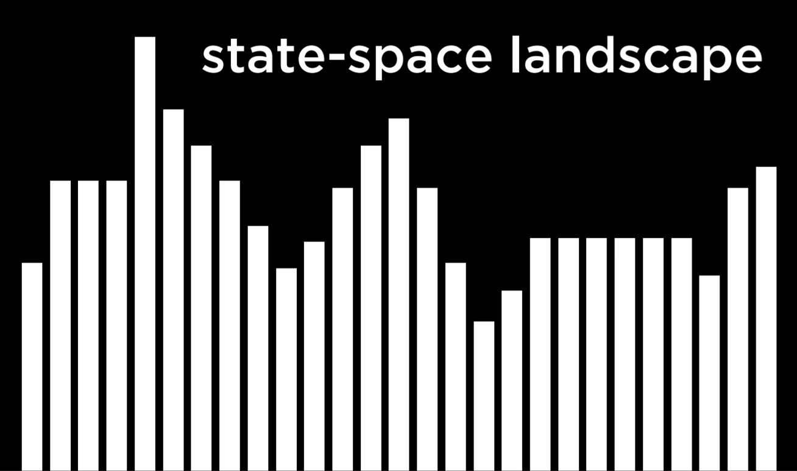
Going off of this visualization, we can define a few important terms for the rest of our 讨论:
- An Objective Function is a function that we use to maximize the value of the solution.
- A Cost Function is a function that we use to minimize the cost of the solution (this is the function that we would use in our 示例 with houses and hospitals. We want to minimize the distance from houses to hospitals).
- A Current State is the state that is currently being considered by the function.
- A Neighbor State is a state that the current state can transition to. In the one-dimensional state-space landscape above, a neighbor state is the state to either side of the current state. In our 示例, a neighbor state could be the state resulting from moving one of the hospitals to any direction by one step. Neighbor states are usually similar to the current state, and, therefore, their values are 关闭 to the value of the current state.
笔记 that the way local 搜索 算法 work is by considering one node in a current state, and then moving the node to one of the current state’s neighbors. This is unlike the minimax algorithm, for 示例, where every single state in the state space was considered recursively.
Hill Climbing
Hill climbing is one type of a local 搜索 algorithm. In this algorithm, the neighbor states are compared to the current state, and if any of them is better, we change the current node from the current state to that neighbor state. What qualifies as better is defined by whether we use an objective function, preferring a higher value, or a decreasing function, preferring a lower value.
A hill climbing algorithm will look the following way in pseudocode:
function Hill-Climb(problem):
- current = initial state of problem
- repeat:
- neighbor = best valued neighbor of current
- if neighbor not better than current:
- return current
- current = neighbor
In this algorithm, we start with a current state. In some problems, we will know what the current state is, while, in others, we will have to start with selecting one randomly. Then, we repeat the following actions: we evaluate the neighbors, selecting the one with the best value. Then, we compare this neighbor’s value to the current state’s value. If the neighbor is better, we switch the current state to the neighbor state, and then repeat the process. The process ends when we compare the best neighbor to the current state, and the current state is better. Then, we return the current state.
Using the hill climbing algorithm, we can start to improve the locations that we assigned to the hospitals in our 示例. After a few transitions, we get to the following state:
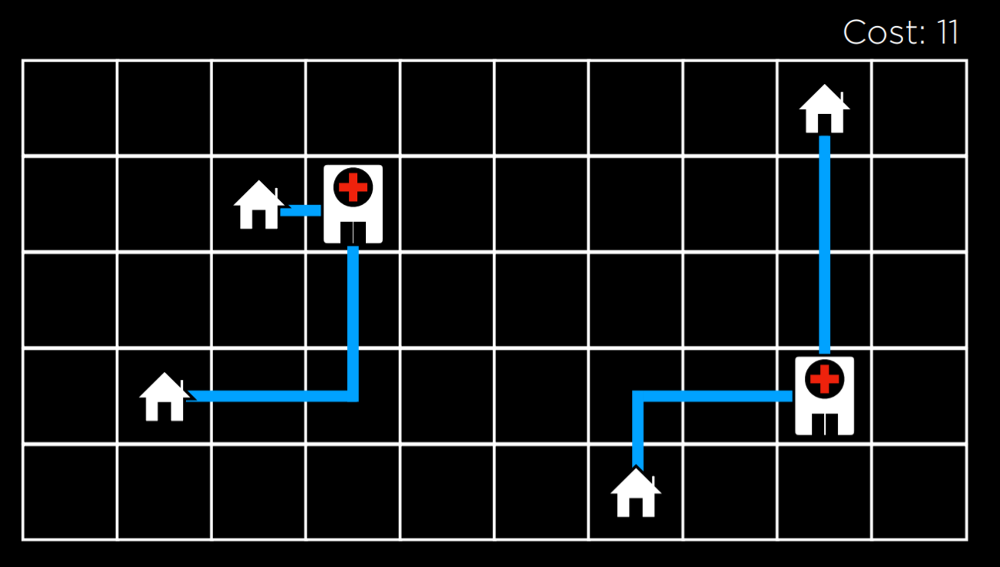
At this state, the cost is 11, which is an improvement over 17, the cost of the initial state. However, this is not the optimal state just yet. For 示例, moving the hospital on the left to be underneath the top left house would bring to a cost of 9, which is better than 11. However, this version of a hill climbing algorithm can’t get there, because all the neighbor states are at least as costly as the current state. In this sense, a hill climbing algorithm is short-sighted, often settling for solutions that are better than some others, but not necessarily the best of all possible solutions.
Local and Global Minima and Maxima
As mentioned above, a hill climbing algorithm can get stuck in local maxima or minima. A local maximum (plural: maxima) is a state that has a higher value than its neighboring states. As opposed to that, a global maximum is a state that has the highest value of all states in the state-space.
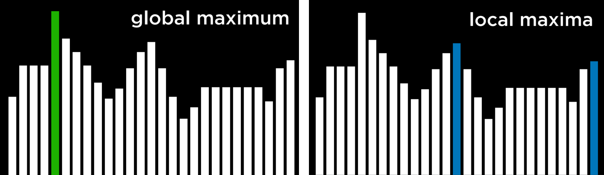
In contrast, a local minimum (plural: minima) is a state that has a lower value than its neighboring states. As opposed to that, a global minimum is a state that has the lowest value of all states in the state-space.
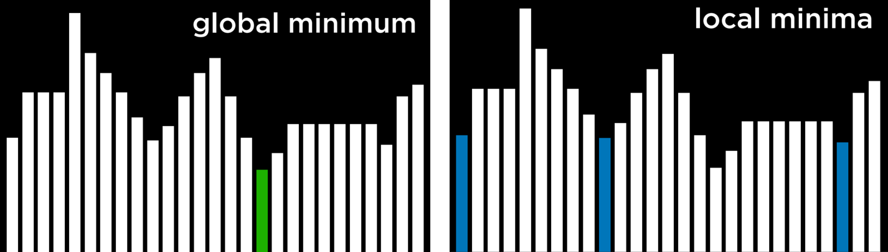
The problem with hill climbing 算法 is that they 五月 end up in local minima and maxima. Once the algorithm reaches a point whose neighbors are worse, for the function’s purpose, than the current state, the algorithm stops. Special types of local maxima and minima include the flat local maximum/minimum, where multiple states of equal value are adjacent, forming a plateau whose neighbors have a worse value, and the shoulder, where multiple states of equal value are adjacent and the neighbors of the plateau can be both better and worse. Starting from the middle of the plateau, the algorithm will not be able to advance in any direction.
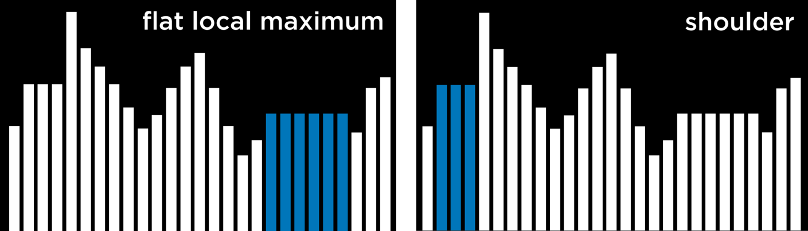
Hill Climbing Variants
Due to the limitations of Hill Climbing, multiple variants have been thought of to overcome the problem of being stuck in local minima and maxima. What all variations of the algorithm have in common is that, no matter the strategy, each one still has the potential of ending up in local minima and maxima and no means to continue optimizing. The 算法 below are phrased such that a higher value is better, but they also apply to cost functions, where the goal is to minimize cost.
- Steepest-ascent: choose the highest-valued neighbor. This is the standard variation that we discussed above.
- Stochastic: choose randomly from higher-valued neighbors. Doing this, we choose to go to any direction that improves over our value. This makes sense if, for 示例, the highest-valued neighbor leads to a local maximum while another neighbor leads to a global maximum.
- First-choice: choose the first higher-valued neighbor.
- Random-restart: conduct hill climbing multiple times. Each 时间, start from a random state. Compare the maxima from every trial, and choose the highest amongst those.
- Local Beam 搜索: chooses the k highest-valued neighbors. This is unlike most local 搜索 算法 in that it uses multiple nodes for the 搜索, and not just one.
Although local 搜索 算法 don’t always give the best possible solution, they can often give a good enough solution in situations where considering every possible state is computationally infeasible.
Simulated Annealing
Although we have seen variants that can improve hill climbing, they all share the same fault: once the algorithm reaches a local maximum, it stops running. Simulated annealing allows the algorithm to “dislodge” itself if it gets stuck in a local maximum.
Annealing is the process of heating metal and allowing it to cool slowly, which serves to toughen the metal. This is used as a metaphor for the simulated annealing algorithm, which starts with a high temperature, being 更多 likely to make random decisions, and, as the temperature decreases, it becomes 较少 likely to make random decisions, becoming 更多 “firm.” This mechanism allows the algorithm to change its state to a neighbor that’s worse than the current state, which is how it can escape from local maxima. The following is pseudocode for simulated annealing:
function Simulated-Annealing(problem, max):
- current = initial state of problem
- for t = 1 to max:
- T = Temperature(t)
- neighbor = random neighbor of current
- ΔE = how much better neighbor is than current
- if ΔE > 0:
- current = neighbor
- with probability e^(ΔE/T) set current = neighbor
- return current
The algorithm takes as input a problem and max, the number of times it should repeat itself. For each iteration, T is set using a Temperature function. This function returns a higher value in the early iterations (when t is low) and a lower value in later iterations (when t is high). Then, a random neighbor is selected, and ΔE is computed such that it quantifies how better the neighbor state is than the current state. If the neighbor state is better than the current state (ΔE > 0), as before, we set our current state to be the neighbor state. However, when the neighbor state is worse (ΔE < 0), we still might set our current state to be that neighbor state, and we do so with probability e^(ΔE/T). The idea here is that a 更多 negative ΔE will result in lower probability of the neighbor state being chosen, and the higher the temperature T the higher the probability that the neighbor state will be chosen. This means that the worse the neighbor state, the 较少 likely it is to be chosen, and the earlier the algorithm is in its process, the 更多 likely it is to set a worse neighbor state as current state. The math behind this is as follows: e is a constant (around 2.72), and ΔE is negative (since this neighbor is worse than the current state). The 更多 negative ΔE, the closer the resulting value to 0. The higher the temperature T is, the closer ΔE/T is to 0, making the probability closer to 1.
Traveling Salesman Problem
In the traveling salesman problem, the task is to connect all points while choosing the shortest possible distance. This is, for 示例, what delivery companies need to do: find the shortest route from the store to all the customers’ houses and 返回.
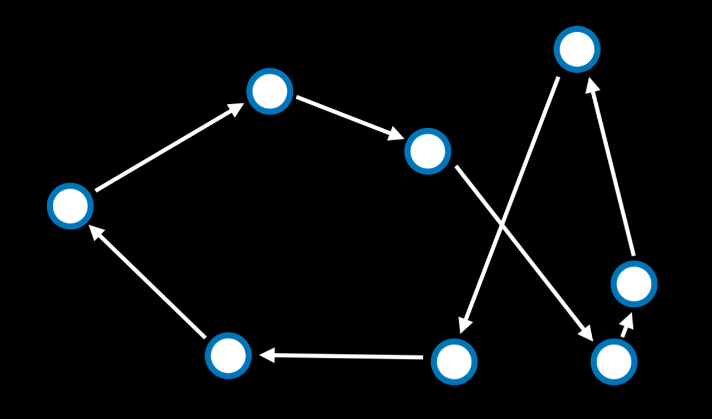
In this case, a neighbor state might be seen as a state where two arrows swap places. Calculating every possible combination makes this problem computationally demanding (having just 10 points gives us 10!, or 3,628,800 possible routes). By using the simulated annealing algorithm, a good solution can be found for a lower computational cost.
Linear 编程
Linear 编程 is a family of problems that optimize a linear equation (an equation of the form y = ax₁ + bx₂ + …).
Linear 编程 will have the following components:
- A cost function that we want to minimize: c₁x₁ + c₂x₂ + … + cₙxₙ. Here, each x₋ is a variable and it is associated with some cost c₋.
- A constraint that’s represented as a sum of variables that is either 较少 than or equal to a value (a₁x₁ + a₂x₂ + … + aₙxₙ ≤ b) or precisely equal to this value (a₁x₁ + a₂x₂ + … + aₙxₙ = b). In this case, x₋ is a variable, and a₋ is some 资源 associated with it, and b is how much 资源 we can dedicate to this problem.
- Individual bounds on variables (for 示例, that a variable can’t be negative) of the form lᵢ ≤ xᵢ ≤ uᵢ.
Consider the following 示例:
- Two machines, X₁ and X₂. X₁ costs $50/hour to run, X₂ costs $80/hour to run. The goal is to minimize cost. This can be formalized as a cost function: 50x₁ + 80x₂.
- X₁ requires 5 units of labor per hour. X₂ requires 2 units of labor per hour. Total of 20 units of labor to spend. This can be formalized as a constraint: 5x₁ + 2x₂ ≤ 20.
- X₁ produces 10 units of output per hour. X₂ produces 12 units of output per hour. Company needs 90 units of output. This is another constraint. Literally, it can be rewritten as 10x₁ + 12x₂ ≥ 90. However, constraints need to be of the form (a₁x₁ + a₂x₂ + … + aₙxₙ ≤ b) or (a₁x₁ + a₂x₂ + … + aₙxₙ = b). Therefore, we multiply by (-1) to get to an equivalent equation of the desired form: (-10x₁) + (-12x₂) ≤ -90.
An optimizing algorithm for linear 编程 requires 背景 knowledge in geometry and linear algebra that we don’t want to assume. Instead, we can use 算法 that already exist, such as Simplex and Interior-Point.
The following is a linear 编程 示例 that uses the scipy library in Python:
import scipy.optimize
# Objective Function: 50x_1 + 80x_2
# Constraint 1: 5x_1 + 2x_2 <= 20
# Constraint 2: -10x_1 + -12x_2 <= -90
result = scipy.optimize.linprog(
[50, 80], # Cost function: 50x_1 + 80x_2
A_ub=[[5, 2], [-10, -12]], # Coefficients for inequalities
b_ub=[20, -90], # Constraints for inequalities: 20 and -90
)
if result.success:
print(f"X1: {round(result.x[0], 2)} hours")
print(f"X2: {round(result.x[1], 2)} hours")
else:
print("No solution")
Constraint Satisfaction
Constraint Satisfaction problems are a class of problems where variables need to be assigned values while satisfying some conditions.
Constraints satisfaction problems have the following properties:
- Set of variables (x₁, x₂, …, xₙ)
- Set of domains for each variable {D₁, D₂, …, Dₙ}
- Set of constraints C
Sudoku can be represented as a constraint satisfaction problem, where each empty square is a variable, the domain is the numbers 1-9, and the constraints are the squares that can’t be equal to each other.
Consider another 示例. Each of students 1-4 is taking three 课程 from A, B, …, G. Each 课程 needs to have an exam, and the possible days for exams are 星期一, 星期二, and 星期三. However, the same student can’t have two exams on the same day. In this case, the variables are the 课程, the domain is the days, and the constraints are which 课程 can’t be scheduled to have an exam on the same day because the same student is taking them. This can be visualized as follows:
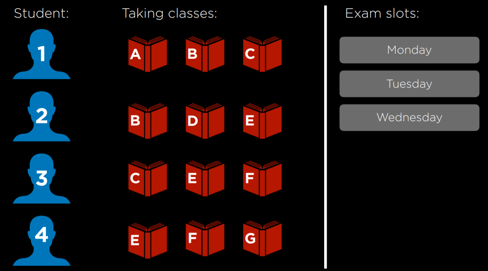
This problem can be solved using constraints that are represented as a graph. Each node on the graph is a 课程, and an edge is drawn between two 课程 if they can’t be scheduled on the same day. In this case, the graph will look this:
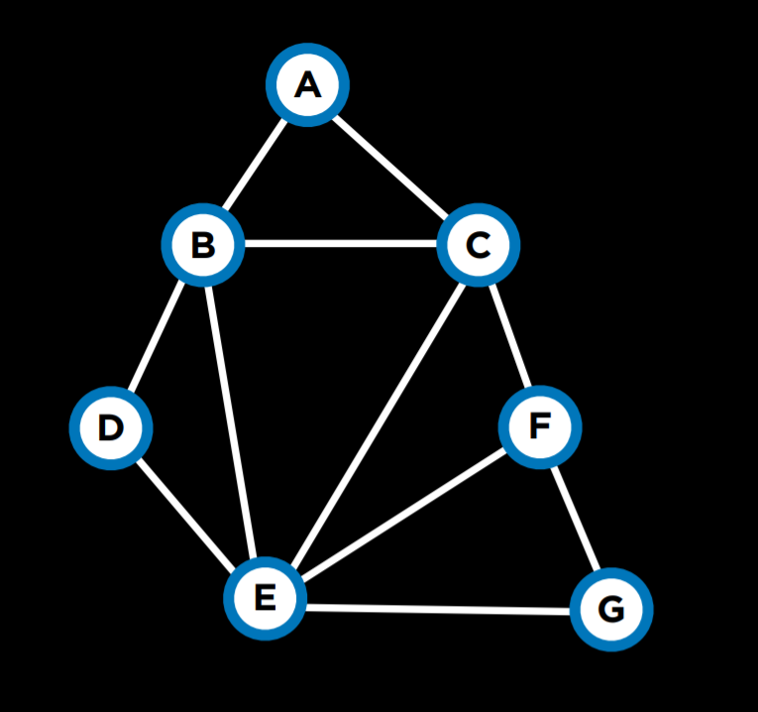
A few 更多 terms worth knowing 关于 constraint satisfaction problems:
- A Hard Constraint is a constraint that must be satisfied in a correct solution.
- A Soft Constraint is a constraint that expresses which solution is preferred over others.
- A Unary Constraint is a constraint that involves only one variable. In our 示例, a unary constraint would be saying that 课程 A can’t have an exam on 星期一 {A ≠ 星期一}.
- A Binary Constraint is a constraint that involves two variables. This is the type of constraint that we used in the 示例 above, saying that some two 课程 can’t have the same value {A ≠ B}.
Node Consistency
Node consistency is when all the values in a variable’s domain satisfy the variable’s unary constraints.
For 示例, let’s take two 课程, A and B. The domain for each 课程 is {星期一, 星期二, 星期三}, and the constraints are {A ≠ Mon, B ≠ Tue, B ≠ Mon, A ≠ B}. Now, neither A nor B is consistent, because the existing constraints prevent them from being able to take every value that’s in their domain. However, if we remove 星期一 from A’s domain, then it will have node consistency. To achieve node consistency in B, we will have to remove both 星期一 and 星期二 from its domain.
Arc Consistency
Arc consistency is when all the values in a variable’s domain satisfy the variable’s binary constraints (笔记 that we are now using “arc” to refer to what we previously referred to as “edge”). In other words, to make X arc-consistent with respect to Y, remove elements from X’s domain until every choice for X has a possible choice for Y.
Consider our 上一页 示例 with the revised domains: A:{星期二, 星期三} and B:{星期三}. For A to be arc-consistent with B, no matter what day A’s exam gets scheduled (from its domain), B will still be able to schedule an exam. Is A arc-consistent with B? If A takes the value 星期二, then B can take the value 星期三. However, if A takes the value 星期三, then there is no value that B can take (remember that one of the constraints is A ≠ B). Therefore, A is not arc-consistent with B. To change this, we can remove 星期三 from A’s domain. Then, any value that A takes (星期二 being the only option) leaves a value for B to take (星期三). Now, A is arc-consistent with B. Let’s look at an algorithm in pseudocode that makes a variable arc-consistent with respect to some other variable (笔记 that csp stands for “constraint satisfaction problem”).
function Revise(csp, X, Y):
- revised = false
- for x in X.domain:
- if no y in Y.domain satisfies constraint for (X,Y):
- delete x from X.domain
- revised = true
- if no y in Y.domain satisfies constraint for (X,Y):
- return revised
This algorithm starts with tracking whether any change was made to X’s domain, using the variable revised. This will be useful in the 下一页 algorithm we examine. Then, the code repeats for every value in X’s domain and sees if Y has a value that satisfies the constraints. If yes, then do nothing, if not, remove this value from X’s domain.
Often we are interested in making the whole problem arc-consistent and not just one variable with respect to another. In this case, we will use an algorithm called AC-3, which uses Revise:
function AC-3(csp):
- queue = all arcs in csp
- while queue non-empty:
- (X, Y) = Dequeue(queue)
- if Revise(csp, X, Y):
- if size of X.domain == 0:
- return false
- for each Z in X.neighbors - {Y}:
- Enqueue(queue, (Z,X))
- if size of X.domain == 0:
- return true
This algorithm adds all the arcs in the problem to a queue. Each 时间 it considers an arc, it removes it from the queue. Then, it runs the Revise algorithm to see if this arc is consistent. If changes were made to make it consistent, further actions are needed. If the resulting domain of X is empty, it means that this constraint satisfaction problem is unsolvable (since there are no values that X can take that will allow Y to take any value given the constraints). If the problem is not deemed unsolvable in the 上一页 step, then, since X’s domain was changed, we need to see if all the arcs associated with X are still consistent. That is, we take all of X’s neighbors except Y, and we add the arcs between them and X to the queue. However, if the Revise algorithm returns false, meaning that the domain wasn’t changed, we simply continue considering the other arcs.
While the algorithm for arc consistency can simplify the problem, it will not necessarily solve it, since it considers binary constraints only and not how multiple nodes might be interconnected. Our 上一页 示例, where each of 4 students is taking 3 课程, remains unchanged by running AC-3 on it.
We have encountered 搜索 problems in our first 讲座. A constraint satisfaction problem can be seen as a 搜索 problem:
- Initial state: empty 作业 (all variables don’t have any values assigned to them).
- Actions: add a {variable = value} to 作业; that is, give some variable a value.
- Transition model: shows how adding the 作业 changes the 作业. There is not much depth to this: the transition model returns the state that includes the 作业 following the latest action.
- Goal test: check if all variables are assigned a value and all constraints are satisfied.
- Path cost function: all paths have the same cost. As we mentioned earlier, as opposed to typical 搜索 problems, optimization problems care 关于 the solution and not the route to the solution.
However, going 关于 a constraint satisfaction problem naively, as a regular 搜索 problem, is massively inefficient. Instead, we can make use of the structure of a constraint satisfaction problem to solve it 更多 efficiently.
Backtracking 搜索
Backtracking 搜索 is a type of a 搜索 algorithm that takes into account the structure of a constraint satisfaction 搜索 problem. In general, it is a recursive function that attempts to continue assigning values as long as they satisfy the constraints. If constraints are violated, it tries a different 作业. Let’s look at the pseudocode for it:
function Backtrack(作业, csp):
- if 作业 complete:
- return 作业
- var = Select-Unassigned-Var(作业, csp)
- for value in Domain-Values(var, 作业, csp):
- if value consistent with 作业:
- add {var = value} to 作业
- result = Backtrack(作业, csp)
- if result ≠ failure:
- return result
- remove {var = value} from 作业
- if value consistent with 作业:
- return failure
In words, this algorithm starts with returning the current 作业 if it is complete. This means that, if the algorithm is done, it will not perform any of the additional actions. Instead, it will just return the completed 作业. If the 作业 is not complete, the algorithm selects any of the variables that do not have an 作业 yet. Then, the algorithm tries to assign a value to the variable, and runs the Backtrack algorithm again on the resulting 作业 (递归). Then, it checks the resulting value. If it is not failure, it means that the 作业 worked out, and it should return this 作业. If the resulting value is failure, then the latest 作业 is removed, and a new possible value is attempted, repeating the same process. If all possible values in the domain returned failure, this means that we need to backtrack. That is, that the problem is with some 上一页 作业. If this happens with the variable we start with, then it means that no solution satisfies the constraints.
Consider the following 课程 of action:
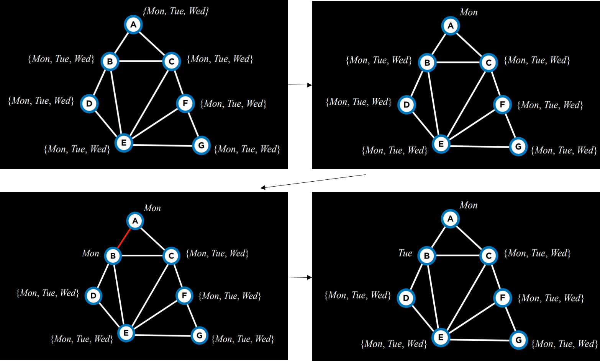
We start with empty 作业 (top left). Then, we choose the variable A, and assign to it some value, 星期一 (top right). Then, using this 作业, we run the algorithm again. Now that A already has an 作业, the algorithm will consider B, and assign 星期一 to it (bottom left). This 作业 returns false, so instead of assigning a value to C given the 上一页 作业, the algorithm will try to assign a new value to B, 星期二 (bottom right). This new 作业 satisfies the constraints, and a new variable will be considered 下一页 given this 作业. If, for 示例, assigning also 星期二 or 星期三 to B would bring to a failure, then the algorithm would backtrack and return to considering A, assigning another value to it, 星期二. If also 星期二 and 星期三 return failure, then it means we have tried every possible 作业 and the problem is unsolvable.
In the 源代码 小组课, you can find an implementation from scratch of the backtrack algorithm. However, this algorithm is widely used, and, as such, multiple libraries already contain an implementation of it.
Inference
Although backtracking 搜索 is 更多 efficient than simple 搜索, it still takes a lot of computational power. Enforcing arc consistency, on the other hand, is 较少 资源 intensive. By interleaving backtracking 搜索 with inference (enforcing arc consistency), we can get at a 更多 efficient algorithm. This algorithm is called the Maintaining Arc-Consistency algorithm. This algorithm will enforce arc-consistency after every new 作业 of the backtracking 搜索. Specifically, after we make a new 作业 to X, we will call the AC-3 algorithm and start it with a queue of all arcs (Y,X) where Y is a neighbor of X (and not a queue of all arcs in the problem). Following is a revised Backtrack algorithm that maintains arc-consistency, with the new additions in bold.
function Backtrack(作业, csp):
- if 作业 complete:
- return 作业
- var = Select-Unassigned-Var(作业, csp)
- for value in Domain-Values(var, 作业, csp):
- if value consistent with 作业:
- add {var = value} to 作业
- inferences = Inference(作业, csp)
- if inferences ≠ failure:
- add inferences to 作业
- result = Backtrack(作业, csp)
- if result ≠ failure:
- return result
- remove {var = value} and inferences from 作业
- if value consistent with 作业:
- return failure
The Inference function runs the AC-3 algorithm as described. Its output is all the inferences that can be made through enforcing arc-consistency. Literally, these are the new 作业 that can be deduced from the 上一页 作业 and the structure of the constrain satisfaction problem.
There are additional ways to make the algorithm 更多 efficient. So far, we selected an unassigned variable randomly. However, some choices are 更多 likely to bring to a solution faster than others. This requires the use of heuristics. A heuristic is a rule of thumb, meaning that, 更多 often than not, it will bring to a better result than following a naive approach, but it is not guaranteed to do so.
Minimum Remaining Values (MRV) is one such heuristic. The idea here is that if a variable’s domain was constricted by inference, and now it has only one value left (or even if it’s two values), then by making this 作业 we will reduce the number of backtracks we might need to do later. That is, we will have to make this 作业 sooner or later, since it’s inferred from enforcing arc-consistency. If this 作业 brings to failure, it is better to find out 关于 it as soon as possible and not backtrack later.
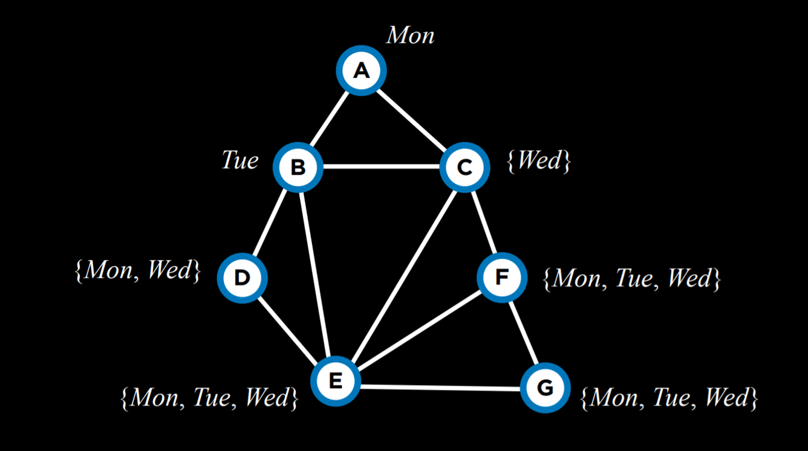
For 示例, after having narrowed down the domains of variables given the current 作业, using the MRV heuristic, we will choose variable C 下一页 and assign the value 星期三 to it.
The Degree heuristic relies on the degrees of variables, where a degree is how many arcs connect a variable to other variables. By choosing the variable with the highest degree, with one 作业, we constrain multiple other variables, speeding the algorithm’s process.
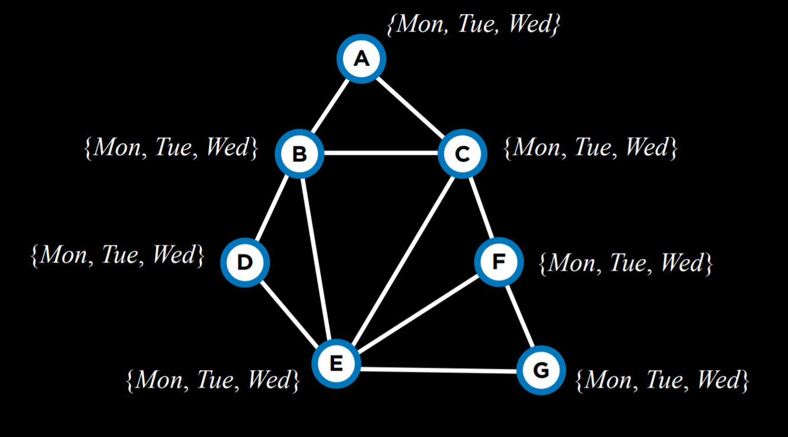
For 示例, all the variables above have domains of the same size. Thus, we should pick a domain with the highest degree, which would be variable E.
Both heuristics are not always applicable. For 示例, when multiple variables have the same least number of values in their domain, or when multiple variables have the same highest degree.
Another way to make the algorithm 更多 efficient is employing yet another heuristic when we select a value from the domain of a variable. Here, we would like to use the Least Constraining Values heuristic, where we select the value that will constrain the least other variables. The idea here is that, while in the degree heuristic we wanted to use the variable that is 更多 likely to constrain other variables, here we want this variable to place the least constraints on other variables. That is, we want to locate what could be the largest potential source of trouble (the variable with the highest degree), and then render it the least troublesome that we can (assign the least constraining value to it).
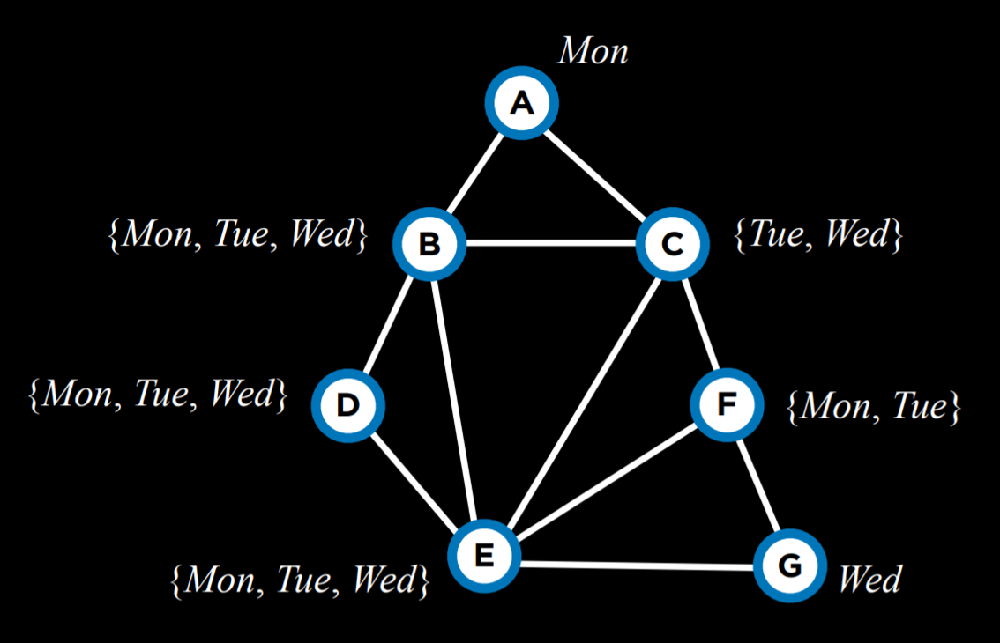
For 示例, let’s consider variable C. If we assign 星期二 to it, we will put a constraint on all of B, E, and F. However, if we choose 星期三, we will put a constraint only on B and E. Therefore, it is probably better to go with 星期三.
To summarize, optimization problems can be formulated in multiple ways. Today we considered local 搜索, linear 编程, and constraint satisfaction.